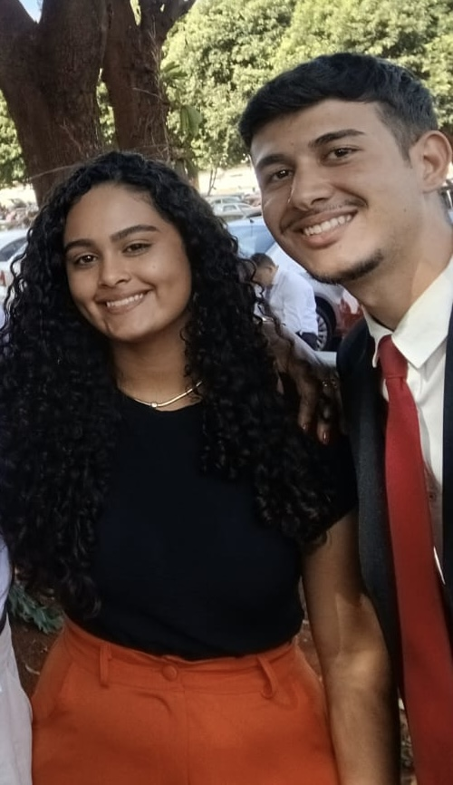
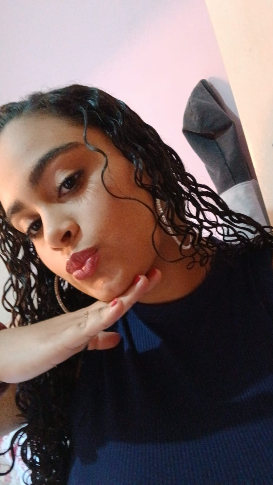
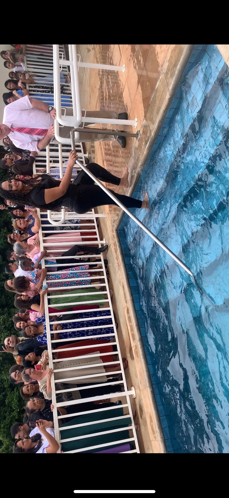
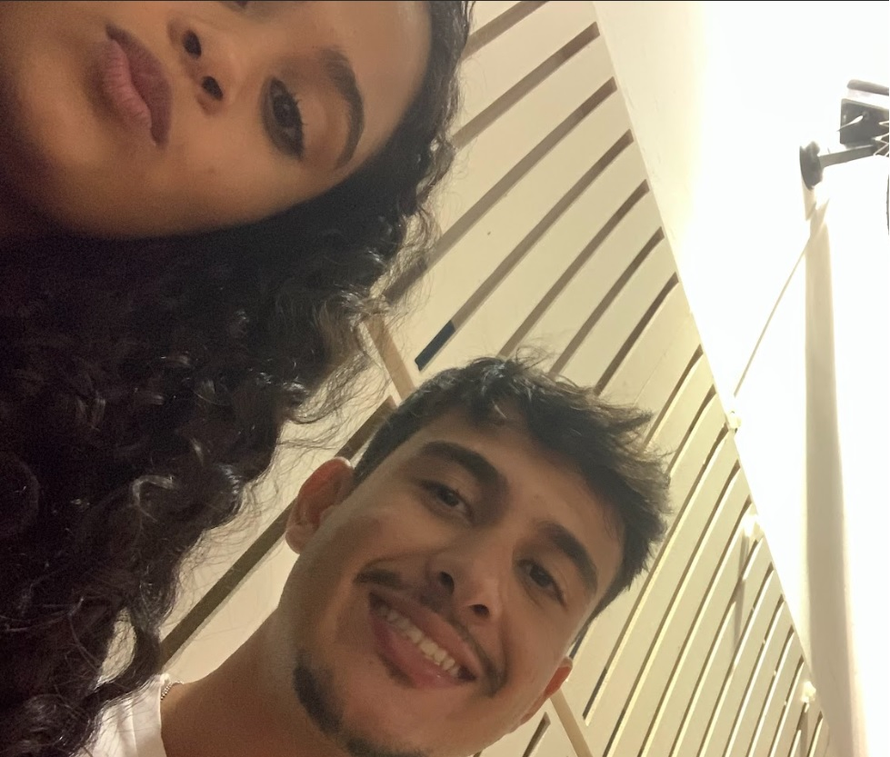

Eu sou ruim nisso ainda, mas é de coração

Você com toda certeza é um presente de Jeová, sou grato por toda ajuda e conselhos que você dá
nos momentos dificeis que passei, voce sempre fez o máximo pra me ajudar
e eu sou muito grato por tudo, acho que Marcelo sem a Lais Araujo
na vida, não combinaria.

Nunca deixa de ser essa menina maravilhosa que você é, não deixe que ninguem mude seu jeito
seu jeito de falar, de brincar, ate essa suas caretas debochadas, tudo isso te torna diferente

Eu sei que as coisas não são faceis, mas quem disse que seria? Satanas sabe que voce é muito importante para Jeová
e ele vai querer te tirar, mas nunca se esqueça, Jeová te ama lais, e olha por voce todos os dias,e te protege
e ele ve os seus esforços de fazer o melhor pra ele e fica muito orgulhoso de você, esse dia do seu batismo
os anjos fizeram festa no céu, Jeová, jesus , sua familia, todos seus amigos, ficaram felizes por você.
Não desista Lais pfv, por mais difcil que seja, seja forte, quaisquer que for o problema, ora pra Jeová
ele vai te ajudar, não se deixa enganar pelos prazeres do mundo, a real felicidade é dentro do salão, dos seus amigos de vdd.

Você é muito importante pra mim , nunca se esqueça disso, o que voce precisar você pode contar comigo sempre
independente do que seja, vou estar sempre com você, você uma joia, uma joia linda e brilhante, sem sombra de duvidas
os melhores momentos é quando vc esta junto labubu, pq seu jeito, suas risadas estranhas, é que torna tudo descontraido
VOCÊ É INCRIVEL, e nunca deixa que as pessoas pense menos q isso sobre você. Eu quero passar no novo mundo e quero você la cmg
pq igual falo pra vc, sou igual carrapato, dps q gruda é dificil de sair, obrigado por tudo e por cada momento, você tem um espaço
guardado especialmente pra vc no meu coração para sempre
Amo muito voce Lais
com carinho Marcelo ❤️